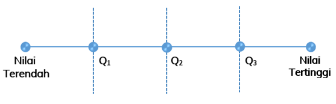

Kuartil adalah nilai-nilai yang membagi data menjadi empat kelompok data sama banyak. Nilai-nilai tersebut dilambangkan dengan $Q_1,Q_2$, dan $Q_3$.
$Q_1$ = Kuartil Bawah
$Q_2$ = Kuartil Tengah (Median)
$Q_3$ = Kuartil Atas
Letak kuartil dari suatu data dapat ditentukan dengan mengikuti langkah-langkah sebagai berikut.
Selain itu, nilai-nilai kuartil juga dapat ditentukan dengan rumus berikut.
Letak $Q_i$ = data ke $\frac{i}{4}(n+1)$
$i$ = 1, 2, dan 3
$n$ = banyak data (syarat: $n$ > 4) dari data terurut
Agar lebih memahami bagaimana menentukan kuartil, kerjakan dan pahamilah beberapa contoh berikut ini:
Perhatikan data berikut!
| 4, | 7, | 7, | 5, | 6, | 5, | 4, | 7, | 8, | 9, | 4. |
Kuartil dari data tersebut dapat ditentukan dengan langkah-langkah berikut.


Benar, kuartil atas (Q3) dari data tersebut adalah 7.
Jadi, kuartil dari data tersebut adalah :
Q1 = 4
Q2 = 6
Q3 = 7
Data berikut menunjukkan hasil ulangan Matematika 19 siswa.
| 6, | 6, | 6, | 7, | 7, | 7, | 7, | 8, | 8, | 8, |
| 8, | 8, | 8, | 9, | 9, | 9, | 9, | 9, | 10. |
Tentukan kuartil bawah, kuartil tengah, dan kuartil atas dari data tersebut.
Penyelesaian :
Jumlah data ($n$) = 19
Karena data sudah terurut naik maka nilai $Q_1$, $Q_2$, dan $Q_3$ dapat langsung ditentukan.